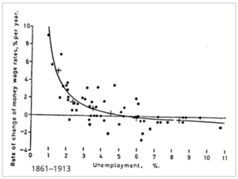

import dbnomicsVisualizing the Philips Curve
The Philips Curve was initially discovered as a statistical relationship between unemployment and inflation. The original version used historical US data.

Our goal here is to visually inspect the Philips curve using recent data, for several countries.
In the process we will learn to: - import dataframes, inspect them, merge them, clean the resulting data - use matplotlib to create graphs - bonus: experiment with other plotting libraries
Importing the Data
We start by loading library dbnomics which contains all the data we want. It is installed already on the nuvolos server.
The following code imports data for from dbnomics for a few countries.
table_1 = dbnomics.fetch_series([
"OECD/DP_LIVE/FRA.CPI.TOT.AGRWTH.Q",
"OECD/DP_LIVE/GBR.CPI.TOT.AGRWTH.Q",
"OECD/DP_LIVE/USA.CPI.TOT.AGRWTH.Q",
"OECD/DP_LIVE/DEU.CPI.TOT.AGRWTH.Q"
])table_2 = dbnomics.fetch_series([
"OECD/MEI/DEU.LRUNTTTT.STSA.Q",
"OECD/MEI/FRA.LRUNTTTT.STSA.Q",
"OECD/MEI/USA.LRUNTTTT.STSA.Q",
"OECD/MEI/GBR.LRUNTTTT.STSA.Q"
])Describe concisely the data that has been imported (periodicity, type of measure, …). You can either check dbnomics website or look at the databases.
Show the first rows of each database. Make a list of all columns.
Compute standard statistics for all variables
Compute averages and standard deviations for unemployment and inflation, per country.
# option 1: by using pandas boolean selection
# table_1.query("Country=='France'")# option 2: by using groupbyThe following command merges the two databases together. Explain the role of argument on. What happened to the column names?
table = table_1.merge(table_2, on=["period", 'Country']) We rename the new names for the sake of clarity and normalize everything with lower cases.
table = table.rename(columns={
'period': 'date', # because it sounds more natural
'Country': 'country',
'value_x': 'inflation',
'value_y': 'unemployment'
})On the merged table, compute at once all the statistics computed before (use groupby and agg).
Before we process further, we should tidy the dataframe by keeping only what we need. - Keep only the columns date, country, inflation and unemployment - Drop all na values - Make a copy of the result
df = table[['date', 'country', 'inflation', 'unemployment']].dropna()df = df.copy()
# note: the copy() function is here to avoid keeping references to the original databaseWhat is the maximum available interval for each country? How would you proceed to keep only those dates where all datas are available? In the following we keep the resulting “cylindric” database.
Our DataFrame is now ready for further analysis !
Plotting using matplotlib
Our goal now consists in plotting inflation against unemployment to see whether a pattern emerges. We will first work on France.
from matplotlib import pyplot as pltCreate a database df_fr which contains only the data for France.
The following command create a line plot for inflation against unemployment. Can you transform it into a scatterplot ?
plt.plot(df_fr['unemployment'], df_fr['inflation']) # missing 'o'Expand the above command to make the plot nicer (label, title, grid, …)
Visualizing the regression
The following piece of code regresses inflation on unemployment.
from statsmodels.formula import api as sm
model = sm.ols(formula='inflation ~ unemployment', data=df_fr)
result = model.fit()We can use the resulting model to “predict” inflation from unemployment.
result.predict(df_fr['unemployment'])Store the result in df_fr as a new column reg_unemployment
Add the regression line to the scatter plot.
Now we would like to compare all countries. Can you find a way to represent the data for all of them (all on one graph, using subplots…) ?
Any comment on these results?
Bonus: Visualizing data using altair
Altair is a visualization library (based on Vega-lite) which offers a different syntax to make plots.
It is well adapted to the exploration phase, as it can operate on a full database (without splitting it like we did for matplotlib). It also provides some data transformation tools like regressions, and ways to add some interactivity.
import altair as altThe following command makes a basic plot from the dataframe df which contains all the countries. Can you enhance it by providing a title and encoding information to distinguish the various countries (for instance colors)?
chart = alt.Chart(df).mark_point().encode(
x='unemployment',
y='inflation',
# add something here
)
chartThe following graph plots a regression line, but for all countries, it is rather meaningless. Can you restrict the data to France only?
# modify the following code
chart = alt.Chart(df).mark_point().encode(
x='unemployment',
y='inflation',
)
chart + chart.transform_regression('unemployment', 'inflation').mark_line()One way to visualize data consists in adding some interactivity. Add some title and click on the legend
#run first then modify the following code
multi = alt.selection_multi(fields=["country"])
legend = alt.Chart(df).mark_point().encode(
y=alt.Y('country:N', axis=alt.Axis(orient='right')),
color=alt.condition(multi, 'country:N', alt.value('lightgray'), legend=None)
).add_selection(multi)
chart_2 = alt.Chart(df).mark_point().encode(
x='unemployment',
y='inflation',
color=alt.condition(multi, 'country:N', alt.value('lightgray')),
# find a way to separate on the graph data from France and US
)
chart_2 | legendBonus question: in the following graph you can select an interval in the left panel to select some subsample. Can you add the regression line(s) corresponding to the selected data to the last graph?
brush = alt.selection_interval(encodings=['x'],)
historical_chart_1 = alt.Chart(df).mark_line().encode(
x='date',
y='unemployment',
color='country'
).add_selection(
brush
)
historical_chart_2 = alt.Chart(df).mark_line().encode(
x='date',
y='inflation',
color='country'
)
chart = alt.Chart(df).mark_point().encode(
x='unemployment',
y='inflation',
# find a way to separate on the graph data from France and US
color=alt.condition(brush, 'country:N', alt.value('lightgray'))
)
alt.hconcat(historical_chart_1, historical_chart_2, chart,)Bonus 2: Plotly Express
Another popular option is the plotly library for nice-looking interactive plots. Combined with dash or shiny, it can be used to build very powerful interactive interfaces.
import plotly.express as pxfig = px.scatter(df, x='unemployment', y='inflation', color='country', title="Philips Curves")
figImprove the graph above in any way you like